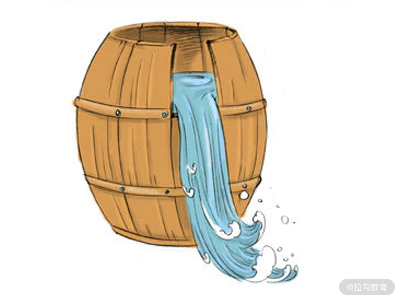

- 00 开篇词 既往不恋，当下不杂，未来不迎.md.html
- 01 微服务架构有哪些特点？.md.html
- 02 微服务架构下的质量挑战.md.html
- 03 微服务架构下的测试策略.md.html
- 04 单元测试：怎样提升最小可测试单元的质量？.md.html
- 05 集成测试：如何进行微服务的集成测试？.md.html
- 06 组件测试：如何保证单服务的质量？.md.html
- 07 契约测试：如何进行消费者驱动的契约测试？.md.html
- 08 端到端测试：站在用户视角验证整个系统.md.html
- 09 微服务架构下的质量保障体系全景概览.md.html
- 10 流程规范篇：高速迭代的研发过程需要怎样的规范？.md.html
- 11 测试技术篇：测试技术这么多，我该如何选型？.md.html
- 12 测试技术篇：如何提升测试效率？.md.html
- 13 测试技术篇：专项测试技术解决了哪些专项问题？.md.html
- 14 CICD 篇：如何更好地利用多个“测试”环境？.md.html
- 15 CICD 篇：如何构建持续交付工具链？.md.html
- 16 度量与运营篇：如何做好质量和效率的度量与运营？.md.html
- 17 度量与运营篇：如何度量与运营效率和价值？.md.html
- 18 组织保障篇：质量是设计出来的.md.html
- 19 软件测试新趋势探讨.md.html
- 20 结束语 QA 如何打造自身的核心竞争力？.md.html
- 捐赠
13 测试技术篇：专项测试技术解决了哪些专项问题？
上一课时，我讲解了可以释放人力提高效率的测试技术。本课时我主要来讲解测试技术：专项测试技术解决了哪些专项问题？
当提到“专项”时，通常有两种理解。
- 某类问题非常突出，需要通过“立专项”的方式来进行集中治理。比如，在业务比较忙的阶段，对用户体验、架构设计等类型的问题没有高优解决。当问题积攒到一定程度或者业务不太忙的时候再进行“还债”。这种情况下，需要的技术可能包含多个方面，未必需要专项的测试技术进行解决。
- 业务系统出现非功能性的质量问题或隐患。通常来说，这种情况需要引入非功能测试来提升这方面的质量属性。
本文主要来针对第二种进行讲解。
非功能测试
在本课程的模块一，我讲解了微服务架构下的分层测试策略，它们是面向功能的测试，主要用于验证功能属性符合预期。在功能属性之外，还有很多非功能的质量属性，如可靠性、可测性、可用性、可扩展性，等等。而要验证这些非功能的质量属性 ，就需要引入非功能测试技术，如性能测试、安全测试、兼容性测试、可靠性测试，等等。
非功能测试是一种软件测试技术，也就是我们常说的专项测试技术，用于验证系统的非功能属性，例如内存泄漏、性能、可用性或系统的健壮性。它使用非功能性的参数来测试系统，而功能性测试无法验证系统的非功能属性。非功能测试的典型示例是检查可以同时登录系统的人数。由此可知，非功能测试不会对系统的功能产生直接的业务影响，但可以在很大程度上提高用户体验和用户友好性，进而对软件质量产生更好的影响。
可见，非功能测试与功能测试同等重要，并且极大地影响了客户对软件应用程序的满意度。
常见的专项测试技术
对于微服务架构来说，非功能测试有很多，常见的有如下几类。
如何找出系统性能瓶颈？——全链路压力测试
对于服务端来说，性能测试尤为重要。通常情况下，会通过单接口性能测试来发现其性能问题并优化解决。常见的工具有 Apache Benchmark、Jmeter、LoadRunner 等。微服务架构下，单接口性能测试很难模拟出接近生产环境的场景和数据规模，因为整个集群和系统的性能取决于接口的短板效应（如图短板效应）。而短板的接口，在正常的流量下，是不会显现出来的。

短板效应
微服务架构下，系统及接口不是独立存在的，它们的相互调用关系复杂。当业务流量暴涨时，从网关接入层到各级后端服务都将面临巨大的请求压力，而且还受到公共资源的制约，如 CDN、网络带宽、消息队列、缓存、各类中间件、数据存储等，最终会体现为某个服务的处理能力出现瓶颈，引发宕机。当某个单点服务出现性能问题时，这种问题会快速累积放大，进而成为系统性问题，如果不及时解决，会造成雪崩效应，进一步引发整个系统集群的瘫痪。
这样的情况下，可以引入全链路压测，它是基于生产环境的业务场景、系统环境，模拟海量的用户请求和数据对整个业务链进行压力测试，并持续调优的过程。通过压测确定系统的基准吞吐量，找到集群的短板，快速找到特定场景下的集群服务器配比和每个系统支撑该场景所需服务器的数量。因此，全链路压测起到了两层作用，一来可以发现整个系统的服务能力瓶颈，进行针对性地优化；二来可以获取合理的服务器数量配比，针对短板服务增加机器配置或数量，用容量来换取性能，极大地节省成本。
现在大型互联网公司已经建立起全链路压测机制，如京东、阿里巴巴、美团、滴滴、饿了么等。他们通常会在节假日、大促之前进行全链路压测。一般来说，全链路压测平台需在接入层的请求接口进行真实流量复制（如网易开源的 TCPCopy），这样可以简化模拟数据带来的成本，将复制的流量请求引入到压力测试环境，对微服务进行施压。如果要加大压力，可通过调节 TCPCopy 的参数。在数据库存储方面，则通过影子库及影子表进行真实数据和模拟数据的隔离，影子表和生产表建立相同的表结构，通过打 tag 进行区分，便于隔离删除。
全链路压测工具通常需要基于业务系统进行特殊设计与开发，因此没有特定的测试工具可以直接支持，如果想了解具体实现原理，可以借鉴大型互联网公司的全链路压测方案。
如何避免系统被攻击？——安全测试
通常来说，因为业务的特殊性，所以安全测试尤为重要，比如金融类业务。或者公司在安全方面有足够好的基础建设（比如奇虎 360 公司），日常研发交付过程就需要进行安全测试。否则，通常情况下，开发团队的注意力大部分集中在业务功能的实现上，微服务系统的安全性相关的需求没有得到足够的明确和重视，而当业务体量逐渐增多时或出现安全类故障时才开始重视起来。
安全测试是以发现系统所有可能的安全隐患为出发点，通过分析系统架构，找出系统所有可能的攻击界面或入口，再进行完备的测试。安全测试需要比较高的知识和技术门槛儿，如各类型的DDoS攻防技术、安全对抗经验和数据分析溯源经验等，因而安全测试工程师一般作为一种特定的职位存在。
基于上述，安全测试分以下几种：
- 有专门的安全测试团队，比如奇虎 360 公司，安全是发布流程中的一环，在发布前提交给安全团队，安全检测通过后才可以对外发布；
- 有专职的安全测试人员，专门负责所在业务的安全类测试，具体情况与上面类似；
- 邀请第三方公司进行渗透测试，渗透测试则是以成功入侵系统，证明系统存在安全问题为出发点，以攻击者的角度来看待和思考问题；
- 没有专项的安全测试，但在常规的测试过程中加入安全测试的元素，比如针对日志信息进行脱敏、对接口中的关键数据进行脱敏、避免被爬虫等。
常用的安全类测试工具有 Kali linux，SQLmap、Burp Suite、Wireshark 等。
如何测试“流程”？——灾难恢复测试
前面所说的各种测试，都是对微服务系统的测试。其实测试流程和人也同样重要，这种测试通常叫作灾难恢复测试，简称 DiRT。
DiRT（Disaster Recovery Testing，灾难恢复测试）是通过对系统故障进行预案和演练，看看各团队如何协同响应。它的目标是沉淀通用的故障模式，以可控的成本在线上生产环境进行重放，通过演练暴露问题，不断推动系统、工具、流程、人员能力的提升。生活中比较类似的例子则是防火演习和地震演习。
灾难恢复测试不仅可以检验业务应用系统处理故障的能力，也可以用于当故障发生时，快速地发现并定位故障，通知相应团队进行处理。更重要的是，完善应急预案，验证应急预案的有效性，避免预案中的情况发生。因此，灾难恢复测试并非测试人员或测试团队单方面就可以搞定的事情，它通常需要协同开发团队、DBA、SRE、运营团队、客服团队等一起参与讨论，制定出应急预案。
相关的工具有 Chaos Monkey 和 ChaosBlade。Chaos Monkey 是 Netflix 开发的开源工具，它可以在生产环境随机选择并关闭服务。ChaosBlade 是阿里巴巴开源的一款混沌工程工具，可实现底层故障的注入和丰富的故障场景实现，从而帮助分布式系统提升容错性和可恢复性。
对专项测试技术的看法
作为测试人员，不要小看非功能性测试或专项测试。在招聘网站中也很常见，一些专项测试会设置固定的岗位，薪资可观，可见其稀缺性，且如果把它们做到高精尖，可以作为你职业发展路上的核心竞争力。


总结
本课时我讲解了微服务架构除了具有功能的质量属性，还具有很多非功能的质量属性，如可靠性、可测性、可用性、可扩展性等，而要验证这些属性，需要引入专项测试（非功能测试）技术。常见的专项测试技术如下：
- 全链路压力测试基于生产环境的业务场景、系统环境，模拟海量的用户请求和数据对整个业务链进行压力测试，并持续调优，以此来找到系统集群的短板，从而进行有针对性的优化，或者合理地规划服务容量，节省运维成本；
- 安全测试通过分析系统架构、对所有可能的攻击入口进行完备的测试，旨在发现系统所有可能的安全隐患点；
- 灾难恢复测试通过对系统故障进行预案和演练，确保各个团队能够按照约定好的流程做好协同响应，即测试流程和人。
你接触过哪些专项测试技术，以后期望学习哪些专项测试技术，可以写在留言区，一起交流。
相关链接 非功能性测试 https://wallencore.com/non-functional-testing-services/ https://www.softwaretestinghelp.com/functional-testing-vs-non-functional-testing/ 性能测试 https://artillery.io/blog/end-to-end-performance-testing-microservices 阿里全链路压测： http://jm.taobao.org/2017/03/30/20170330/ 有赞全链路压测： https://www.jianshu.com/p/500afba0be1e 京东全链路压测： https://blog.csdn.net/bjo2008cn/article/details/54613583 饿了么全链路压测： https://blog.csdn.net/weixin_30535043/article/details/95240374 滴滴全链路压测解决之道： https://blog.csdn.net/g6u8w7p06dco99fq3/article/details/79119269 美团全链路压测自动化实践： https://tech.meituan.com/2018/09/27/quake-introduction.html 安全测试 https://insights.thoughtworks.cn/user-privacy-security/ https://insights.thoughtworks.cn/security-issues-in-restful/ 灾难恢复测试工具 Chaos Monkey：https://github.com/Netflix/SimianArmy/wiki/Chaos-Monkey ChaosBlade：https://github.com/chaosblade-io/chaosblade/blob/master/README_CN.md.html 安全测试工具 SQLmap：http://sqlmap.org/ Burp Suite：https://portswigger.net/burp Wireshark：https://www.wireshark.org/download.html Kali Linux：https://www.kali.org/
© 2019 - 2023 Liangliang Lee. Powered by gin and hexo-theme-book.